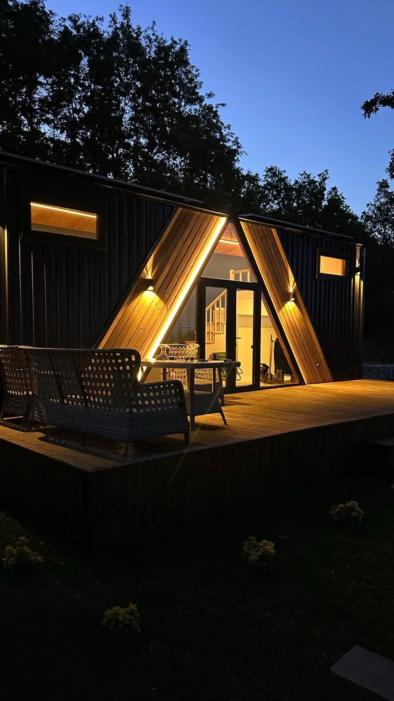

<meta charset="utf-8">
<title>Global — Tiny House ve Modüler Yapılar Kataloğu</title>
<link rel="stylesheet" href="base.css">

<!-- ══════════ 01 · KAPAK ══════════ -->
<section class="page cover white"><div class="pad">
  <div class="ruleline">
    <div class="rule"></div>
    <div class="mark">GLOBAL</div>
    <div class="rule"></div>
  </div>

  <div class="ctitle">
    <div class="kicker" style="margin-bottom:7mm">Ürün Kataloğu · 2026</div>
    <div class="dt" style="letter-spacing:-.045em;font-size:52pt;line-height:.9">
      <span class="g">Tiny</span><span style="color:var(--ink)">House</span>
    </div>
    <div class="cband"><i></i><span>Modüler Yapılar</span><i></i></div>
  </div>

  <div class="cstrip">
    <div style="display:grid;grid-template-columns:2fr 1fr 1fr;gap:4mm">
      <figure style="height:80mm"></figure>
      <figure style="height:80mm"></figure>
      <figure style="height:80mm"></figure>
    </div>
    <div class="cfoot">
      <span>Global Yapı Geliştirme A.Ş.</span>
      <span>globalyapicelik.net</span>
    </div>
  </div>
</div></section>

<!-- ══════════ 02 · İÇİNDEKİLER ══════════ -->
<section class="page white"><div class="pad" style="display:grid;grid-template-columns:12mm 1fr 1fr;gap:9mm">
  <div style="border-right:1px solid var(--line);display:flex;align-items:center;justify-content:center">
    <div class="vert">İçindekiler</div>
  </div>

  <div style="display:flex;flex-direction:column;justify-content:center">
    <div class="kicker">Bu katalog</div>
    <div class="dt stack sm" style="margin-top:4mm"><span class="g">Modüler</span><span class="s">Yapılar</span></div>
    <div class="hr ink"></div>
    <p>
      Fabrikada üretilen, sahada kurulan yapılar. Klasik inşaata göre daha kısa
      sürede biter, hava koşullarından etkilenmez ve gerektiğinde taşınabilir.
    </p>
    <p>
      Bu katalogda tiny house, kiosk, coffee kiosk ve karavan üretimimizi;
      kullanım senaryolarını, iç mekân yaklaşımımızı ve üretim sürecimizi
      bulacaksınız.
    </p>
    <div style="margin-top:6mm">
      <figure style="height:56mm"></figure>
      <div class="cap">Tekerlekli model · dış cephe uygulaması</div>
    </div>
  </div>

  <div style="display:flex;flex-direction:column;justify-content:center">
    <table>
      <tr><td class="k" style="width:16%">01</td><td>Kapak</td></tr>
      <tr><td class="k">02</td><td>İçindekiler</td></tr>
      <tr><td class="k">03</td><td>Biz Kimiz</td></tr>
      <tr><td class="k">04</td><td>Yaklaşımımız</td></tr>
      <tr><td class="k">05</td><td>Tiny House</td></tr>
      <tr><td class="k">06</td><td>İç Mekân</td></tr>
      <tr><td class="k">07</td><td>Kiosk & Coffee Kiosk</td></tr>
      <tr><td class="k">08</td><td>Karavan</td></tr>
      <tr><td class="k">09</td><td>Üretim Süreci</td></tr>
      <tr><td class="k">10</td><td>İletişim</td></tr>
    </table>
    <div class="blk" style="margin-top:8mm">
      <div class="kicker">Tek muhatap</div>
      <p style="margin:2mm 0 0;font-size:8.4pt">
        Tasarım, üretim, nakliye ve montaj tek sözleşmede. Şasiden içerideki
        mutfağa kadar her şey kendi atölyemizde üretilir.
      </p>
    </div>
  </div>
  <div class="pf" style="left:39mm"><span>Modüler Yapılar</span><span>02</span></div>
</div></section>

<!-- ══════════ 03 · BİZ KİMİZ ══════════ -->
<section class="page white"><div class="pad">
  <div style="display:grid;grid-template-columns:1fr 1fr;gap:10mm;align-items:start">
    <div>
      <div class="dt stack"><span class="s">Biz</span><span class="g">Kimiz</span></div>
    </div>
    <p style="padding-top:3mm">
      Kendi tesisimizde çelik konstrüksiyon, ahşap işçiliği ve mobilya üretimini
      bir arada yürüten, üretim odaklı bir yapı markasıyız.
    </p>
  </div>

  <div class="hr"></div>

  <div class="split-l" style="margin-top:2mm">
    <div>
      <div class="sub">Yaptığımız iş</div>
      <p>
        Bir tiny house’un şasisini de, içindeki mutfağı da, cephesindeki ahşabı da
        aynı ekip üretir. Bu yapının en somut faydası kontrol: tasarımdan montaja
        kadar süreç tek elde olduğu için ölçü hataları, tedarikçiler arası
        gecikmeler ve “kimin işi” tartışmaları ortadan kalkar.
      </p>
      <p>
        Turizm tesislerinden bireysel konut sahiplerine, kafe işletmecilerinden
        kurumsal projelere kadar farklı ölçeklerde çalışıyoruz. Tek bir ünite de
        üretiyoruz, seri halde tesis donanımı da.
      </p>
      <div class="hr"></div>
      <ul class="ls">
        <li><b>Kendi atölyemiz</b> — fason değil, kontrollü üretim</li>
        <li><b>Proje bazlı tasarım</b> — hazır kalıp değil, ihtiyaca göre ölçü</li>
        <li><b>Anahtar teslim</b> — elektrik, tesisat, iç mekân ve mobilya dahil</li>
        <li><b>Tek muhatap</b> — üretimden montaja aynı sorumluluk</li>
      </ul>
    </div>
    <div>
      <figure style="height:74mm"></figure>
      <div class="cap">Üretim tesisi · tamamlanma aşamasındaki ünite</div>
      <div class="blk-d" style="margin-top:5mm">
        <div class="kicker" style="color:var(--tan)">Yaklaşımımız</div>
        <p style="margin:2.5mm 0 0;font-size:8.4pt;line-height:1.6">
          “Küçük alan, küçük iş demek değildir. Dar bir hacmi doğru kurmak,
          geniş bir hacmi kurmaktan daha çok detay ister.”
        </p>
      </div>
    </div>
  </div>
  <div class="pf"><span>Biz Kimiz</span><span>03</span></div>
</div></section>

<!-- ══════════ 04 · YAKLAŞIMIMIZ ══════════ -->
<section class="page tan"><div class="pad">
  <div class="split" style="align-items:start">
    <div>
      <div class="dt stack"><span class="g">Neden</span><span class="s">Modüler</span></div>
      <div class="hr ink"></div>
      <p class="lead" style="margin-top:4mm">
        Modüler yapı, işi sahaya taşımak yerine sahayı fabrikaya taşır.
        Kazanç üç yerde ortaya çıkar: zaman, öngörülebilirlik ve esneklik.
      </p>
      <p>
        Ünite atölyede üretilirken siz saha hazırlığını paralel yürütürsünüz.
        Kapalı üretim, yağmurun ya da kışın takvimi bozmaması demektir.
        İş büyürse ikinci bir modül eklenir; yer değişirse ünite taşınır.
      </p>
      <div style="margin-top:6mm">
        <figure style="height:62mm"></figure>
        <div class="cap">Modern kütle · düz çatı ve geniş cam kurgusu</div>
      </div>
    </div>

    <div style="padding-top:4mm">
      <div class="numrow">
        <div class="numbox">01</div>
        <div><h3>Zaman</h3>
          <p>Üretim atölyede sürerken zemin ve altyapı hazırlığı aynı anda ilerler. Klasik inşaatta arka arkaya olan iki iş, burada yan yana yürür.</p></div>
      </div>
      <div class="numrow">
        <div class="numbox">02</div>
        <div><h3>Öngörülebilirlik</h3>
          <p>Kapalı alanda, sabit ekiple ve kontrollü malzemeyle üretim yapılır. Takvim hava koşullarına bağlı kalmaz, maliyet baştan netleşir.</p></div>
      </div>
      <div class="numrow">
        <div class="numbox">03</div>
        <div><h3>Esneklik</h3>
          <p>Ünite büyütülebilir, ikinci bir modülle genişletilebilir veya sökülüp başka bir konuma taşınabilir. Yatırım tek noktaya kilitlenmez.</p></div>
      </div>
      <div class="numrow" style="margin-bottom:0">
        <div class="numbox">04</div>
        <div><h3>Bütünlük</h3>
          <p>Yapı ve iç mekân aynı ekipten çıkar. Dolap duvara tam oturur, tezgâh ölçüye uyar; sonradan “uymadı” sorunu yaşanmaz.</p></div>
      </div>
      <div class="blk-w" style="margin-top:7mm">
        <div class="kicker">Ürün ailesi</div>
        <ul class="dot" style="margin-top:3mm">
          <li>Tiny house — sabit ve tekerlekli</li>
          <li>Kiosk ve coffee kiosk</li>
          <li>Karavan ve mobil yaşam üniteleri</li>
          <li>Kafe, restoran ve satış ofisi üniteleri</li>
        </ul>
      </div>
    </div>
  </div>
  <div class="pf"><span>Yaklaşımımız</span><span>04</span></div>
</div></section>

<!-- ══════════ 05 · TINY HOUSE ══════════ -->
<section class="page white"><div class="pad">
  <div style="display:grid;grid-template-columns:1fr 1fr;gap:10mm;align-items:start">
    <div>
      <div class="kicker">Ürün 01</div>
      <div class="dt stack" style="margin-top:3mm"><span class="s">Tiny</span><span class="g">House</span></div>
    </div>
    <p style="padding-top:8mm">
      Küçük metrekarede tam donanımlı yaşam. Mutfağı, ıslak hacmi, yatak alanı ve
      depolaması eksiksiz kurulmuş, taşınmaya hazır teslim edilen yapılar.
    </p>
  </div>

  <div class="hr"></div>

  <div style="display:grid;grid-template-columns:1.15fr .85fr;gap:9mm;align-items:start">
    <div>
      <figure style="height:78mm"></figure>
      <div class="cap">Tekerlekli model · ahşap ve metal cephe</div>
      <div class="g2" style="margin-top:5mm;gap:5mm">
        <div>
          <div class="sub">Sabit Modeller</div>
          <p style="margin:0">Hazırlanmış zemin üzerine oturur. Kalıcı kullanım, bungalov ve resort odası için uygundur; altyapı bağlantıları sabittir.</p>
        </div>
        <div>
          <div class="sub">Tekerlekli Modeller</div>
          <p style="margin:0">Çekme şasi üzerine kurulur, konum değiştirebilir. Ölçü ve ağırlık trafik mevzuatına göre belirlenir.</p>
        </div>
      </div>
    </div>
    <div>
      <div class="sub">Kullanım Alanları</div>
      <ul class="ls">
        <li>Bağ evi, hafta sonu evi, müstakil konut</li>
        <li>Turizm tesisi, glamping ve resort odası</li>
        <li>Satış ofisi, saha ofisi, misafir ünitesi</li>
        <li>Kiralama amaçlı yatırım üniteleri</li>
      </ul>
      <div class="blk" style="margin-top:6mm">
        <div class="kicker">Plan yaklaşımı</div>
        <p style="margin:2.5mm 0 0">
          Tek kişilik bir kaçamak ile dört kişilik bir aile ünitesi aynı planla
          çözülmez. Loft yatak, açılır mobilya, merdiven içi depolama ve gizli
          dolap çözümleriyle dar hacmi genişletiyoruz.
        </p>
      </div>
    </div>
  </div>

  <div class="g3" style="margin-top:7mm">
    <div><figure style="height:40mm"></figure><div class="cap">Ahşap cephe</div></div>
    <div><figure style="height:40mm"></figure><div class="cap">Klasik beşik çatı</div></div>
    <div><figure style="height:40mm"></figure><div class="cap">A-frame kütle</div></div>
  </div>
  <div class="pf"><span>Tiny House</span><span>05</span></div>
</div></section>

<!-- ══════════ 06 · İÇ MEKÂN ══════════ -->
<section class="page pale"><div class="pad">
  <div style="display:grid;grid-template-columns:1fr 1fr;gap:10mm;align-items:start">
    <div>
      <div class="kicker">Detay</div>
      <div class="dt stack" style="margin-top:3mm"><span class="g">İç</span><span class="s">Mekân</span></div>
    </div>
    <p style="padding-top:8mm">
      Tiny house’un farkı içeride ortaya çıkar. Mutfak tezgâhı, dolaplar, merdiven
      ve banyo dolabı bizim üretimimizdir — hazır mobilya taşımak yerine hacme
      göre ölçülendirip yerinde kuruyoruz.
    </p>
  </div>

  <div class="hr"></div>

  <div class="g2" style="gap:5mm">
    <figure style="height:74mm"></figure>
    <figure style="height:74mm"></figure>
  </div>
  <div class="cap" style="margin-bottom:6mm">Loft yatak alanı, mutfak ve merdiven kurgusu</div>

  <div class="g3" style="gap:5mm">
    <div><figure style="height:44mm"></figure><div class="cap">Merdiven içi depolama</div></div>
    <div><figure style="height:44mm"></figure><div class="cap">Islak hacim uygulaması</div></div>
    <div><figure style="height:44mm"></figure><div class="cap">Oturma ve mutfak adası</div></div>
  </div>

  <div class="g3" style="margin-top:7mm;gap:6mm">
    <div>
      <div class="numbox" style="margin-bottom:3mm">01</div>
      <h3>Dikey Kullanım</h3>
      <p style="margin:0">Loft yatak alanı, tavana kadar dolap ve asma raf sistemleriyle zemin metrekaresi boşa harcanmaz.</p>
    </div>
    <div>
      <div class="numbox" style="margin-bottom:3mm">02</div>
      <h3>Gizli Depolama</h3>
      <p style="margin:0">Basamak altı çekmece, sedir altı hacim ve kaldırılabilir yatak platformu ile ek depolama kazanılır.</p>
    </div>
    <div>
      <div class="numbox" style="margin-bottom:3mm">03</div>
      <h3>Çok Amaçlı Mobilya</h3>
      <p style="margin:0">Açılır masa, katlanır çalışma tezgâhı ve yatağa dönüşen oturma birimi aynı alanı iki işe koşar.</p>
    </div>
  </div>
  <div class="pf"><span>İç Mekân</span><span>06</span></div>
</div></section>

<!-- ══════════ 07 · KIOSK ══════════ -->
<section class="page white"><div class="pad">
  <div style="display:grid;grid-template-columns:1fr 1fr;gap:10mm;align-items:start">
    <div>
      <div class="kicker">Ürün 02</div>
      <div class="dt stack" style="margin-top:3mm"><span class="s">Kiosk</span><span class="g">Coffee</span></div>
    </div>
    <p style="padding-top:8mm">
      İşletmeye hazır satış üniteleri. Tezgâhı, elektrik altyapısı, su tesisatı ve
      ekipman yerleşimi kurulmuş halde teslim edilir — yerine konur, açılır.
    </p>
  </div>

  <div class="hr"></div>

  <div class="split-r">
    <div>
      <div class="sub">Ergonomi</div>
      <p>
        Kahve kiosku en çok çalıştığımız tip. Espresso makinesi, değirmen,
        buzdolabı ve teşhir dolabının konumu daha tasarım aşamasında belirlenir;
        böylece barista tek adımda dönerek çalışır, tezgâh boşuna uzamaz.
      </p>
      <div class="sub" style="margin-top:5mm">Cephe</div>
      <p>
        Ünite işletmenin markasına göre giydirilir. Ahşap, kompozit panel, metal
        kaplama ve cam kombinasyonlarıyla çalışıyoruz; aydınlatma ve tabela
        altyapısı üniteye entegre çıkar.
      </p>
      <div class="sub" style="margin-top:5mm">Nerede Kullanılır</div>
      <ul class="dot">
        <li>AVM içi ve açık alan satış noktaları</li>
        <li>Cadde üstü kahve ve büfe üniteleri</li>
        <li>Kampüs, hastane ve iş merkezi işletmeleri</li>
        <li>Festival, fuar ve etkinlik alanları</li>
      </ul>
    </div>
    <div>
      <div class="g2" style="gap:4mm">
        <figure style="height:62mm"></figure>
        <figure style="height:62mm"></figure>
      </div>
      <div class="cap" style="margin-bottom:5mm">Tezgâh, arka bar ve teşhir dolabı entegrasyonu</div>
      <figure style="height:52mm"></figure>
      <div class="cap">Dış oturma alanıyla birlikte işletme kurgusu</div>
    </div>
  </div>

  <table style="margin-top:6mm">
    <tr><th>Standart altyapı</th><th>Kapsam</th></tr>
    <tr><td class="k">Tezgâh</td><td>Kompakt lamine, ahşap veya paslanmaz seçenekleri</td></tr>
    <tr><td class="k">Elektrik</td><td>Sigorta panosu, priz hattı, aydınlatma tesisatı</td></tr>
    <tr><td class="k">Su</td><td>Temiz ve atık su bağlantısı, tezgâh altı hazırlık</td></tr>
    <tr><td class="k">Havalandırma</td><td>Ekipman ısısına göre menfez ve fan çözümü</td></tr>
  </table>
  <div class="pf"><span>Kiosk & Coffee Kiosk</span><span>07</span></div>
</div></section>

<!-- ══════════ 08 · KARAVAN ══════════ -->
<section class="page tan"><div class="pad">
  <div style="display:grid;grid-template-columns:1fr 1fr;gap:10mm;align-items:start">
    <div>
      <div class="kicker">Ürün 03</div>
      <div class="dt stack" style="margin-top:3mm"><span class="g">Mobil</span><span class="s">Karavan</span></div>
    </div>
    <p style="padding-top:8mm">
      Yolda dayanacak, durduğunda ev gibi olacak üniteler. Şasi seçiminden iç mekân
      yerleşimine kadar hareket halindeki yükü hesaba katarak üretiyoruz.
    </p>
  </div>

  <div class="hr"></div>

  <div class="split-l">
    <div>
      <figure style="height:76mm"></figure>
      <div class="cap">Çekme karavan · ahşap cephe uygulaması</div>
      <p style="margin-top:5mm">
        Karavan üretiminde belirleyici olan ağırlık dağılımı ve bağlantı
        detaylarıdır. Dolaplar duvara sabitlenir, çekmeceler kilitli sistemle
        çalışır, tezgâh ve ıslak hacim titreşime göre yalıtılır. İzolasyon yaz ve
        kış kullanımını birlikte gözetir.
      </p>
      <p>
        İç plan kullanım süresine göre değişir: hafta sonu kullanımı ile uzun
        yolculuk aynı depolama ihtiyacını doğurmaz.
      </p>
    </div>
    <div>
      <figure style="height:52mm"></figure>
      <div class="cap">Kompakt mutfak ve tezgâh düzeni</div>
      <div class="sub" style="margin-top:6mm">Standart Kapsam</div>
      <ul class="ls">
        <li>Şasi üzerine çelik iskelet, izolasyonlu gövde</li>
        <li>Mutfak ünitesi, evye, tezgâh altı depolama</li>
        <li>Islak hacim, temiz ve atık su deposu</li>
        <li>12V / 220V elektrik altyapısı</li>
        <li>Yatak platformu ve kaldırılabilir depolama</li>
      </ul>
      <div class="blk-w" style="margin-top:5mm">
        <p style="margin:0;font-size:7.6pt">
          <b>Not:</b> Karavanların trafiğe tescili, ölçü ve ağırlık sınırları
          yürürlükteki mevzuata tabidir. Proje başlangıcında hedef kullanım
          şeklini değerlendirip uygun şasi ve ölçüyü belirliyoruz.
        </p>
      </div>
    </div>
  </div>
  <div class="pf"><span>Karavan</span><span>08</span></div>
</div></section>

<!-- ══════════ 09 · ÜRETİM SÜRECİ ══════════ -->
<section class="page white"><div class="pad">
  <div style="display:grid;grid-template-columns:1fr 1fr;gap:10mm;align-items:start">
    <div>
      <div class="kicker">Nasıl çalışıyoruz</div>
      <div class="dt stack" style="margin-top:3mm"><span class="s">Üretim</span><span class="g">Süreci</span></div>
    </div>
    <p style="padding-top:8mm">
      Her projede aynı sırayı izliyoruz. Bu sıra, sürprizleri işin sonunda değil
      başında görmemizi sağlar — değişikliğin en ucuz olduğu an, henüz hiçbir şey
      kesilmemişken geçen andır.
    </p>
  </div>

  <div class="hr"></div>

  <div class="tl">
    <div class="it"><div class="yr">01</div><div class="dot">●</div>
      <h4>İhtiyaç Görüşmesi</h4><p>Kullanım amacı, kişi sayısı, kurulum yeri ve bütçe aralığı konuşulur.</p></div>
    <div class="it"><div class="yr">02</div><div class="dot">●</div>
      <h4>Ölçü ve Tasarım</h4><p>Zemin, erişim ve altyapı tespiti; plan çizimi ve üç boyutlu görsel.</p></div>
    <div class="it"><div class="yr">03</div><div class="dot">●</div>
      <h4>Teklif ve Sözleşme</h4><p>Kapsam, fiyat, ödeme planı ve teslim takvimi yazılı hale gelir.</p></div>
    <div class="it"><div class="yr">04</div><div class="dot">●</div>
      <h4>Üretim ve Kontrol</h4><p>Atölyede üretim, fotoğraflı ilerleme paylaşımı ve kalite kontrol listesi.</p></div>
    <div class="it"><div class="yr">05</div><div class="dot">●</div>
      <h4>Nakliye ve Montaj</h4><p>Sahaya taşıma, kurulum, bağlantılar ve çalışır halde teslim.</p></div>
  </div>

  <div class="split-l" style="margin-top:9mm">
    <div>
      <div class="sub">Üretim ve Malzeme</div>
      <table>
        <tr><th>Yapı elemanı</th><th>Seçenekler</th></tr>
        <tr><td class="k">Taşıyıcı konstrüksiyon</td><td>Çelik profil iskelet; tekerlekli modellerde çekme şasi</td></tr>
        <tr><td class="k">Dış cephe</td><td>Ahşap lambri, kompozit panel, metal kaplama, fiber çimento</td></tr>
        <tr><td class="k">Yalıtım</td><td>Taşyünü / poliüretan esaslı ısı ve ses yalıtımı</td></tr>
        <tr><td class="k">Doğrama</td><td>PVC veya alüminyum, ısıcam; projeye göre sürme sistem</td></tr>
        <tr><td class="k">İç kaplama</td><td>Ahşap lambri, alçıpan ve boya, dekoratif panel</td></tr>
      </table>
    </div>
    <div>
      <figure style="height:50mm"></figure>
      <div class="cap">Üretim sahasında sevke hazır ünite</div>
      <div class="blk" style="margin-top:5mm">
        <div class="kicker">Kontrol noktaları</div>
        <ul class="dot" style="margin-top:2.5mm">
          <li>Konstrüksiyon ölçü ve gönye</li>
          <li>İzolasyon sürekliliği, su yalıtımı</li>
          <li>Elektrik hattı ve pano</li>
          <li>Tesisat sızdırmazlık</li>
          <li>Sevk öncesi fotoğraflı son kontrol</li>
        </ul>
      </div>
    </div>
  </div>
  <div class="pf"><span>Üretim Süreci</span><span>09</span></div>
</div></section>

<!-- ══════════ 10 · İLETİŞİM ══════════ -->
<section class="page white"><div class="pad" style="display:flex;flex-direction:column">
  <div style="height:96mm;display:grid;grid-template-columns:1fr 1.4fr;gap:4mm">
    <figure></figure>
    <figure></figure>
  </div>

  <div style="flex:1;display:flex;flex-direction:column;justify-content:center;text-align:center">
    <div class="dt big" style="font-size:40pt"><span style="color:var(--ink)">İletişim</span> <span class="g">Kurun</span></div>
    <p style="max-width:118mm;margin:6mm auto 0">
      Modüler yapı ihtiyacınızı anlatın; size uygun çözümü ve gerçekçi bir takvimi
      birlikte çıkaralım.
    </p>
    <div style="height:1px;background:var(--ink);margin:8mm 0 7mm"></div>
    <div class="g3" style="gap:8mm">
      <div>
        <div class="kicker">Telefon</div>
        <div style="font-size:11pt;font-weight:700;margin-top:2.5mm">+90 546 655 70 70</div>
      </div>
      <div>
        <div class="kicker">E-posta</div>
        <div style="font-size:9pt;font-weight:700;margin-top:2.5mm">info@globalinvestment.com.tr</div>
      </div>
      <div>
        <div class="kicker">Web</div>
        <div style="font-size:10pt;font-weight:700;margin-top:2.5mm">globalyapicelik.net</div>
      </div>
    </div>
  </div>

  <div style="display:flex;justify-content:space-between;font-size:6.6pt;letter-spacing:.20em;text-transform:uppercase;color:var(--muted);border-top:1px solid var(--line);padding-top:3mm">
    <span>Global Yapı Geliştirme A.Ş.</span>
    <span>Tiny House ve Modüler Yapılar · 2026</span>
  </div>
</div></section>
